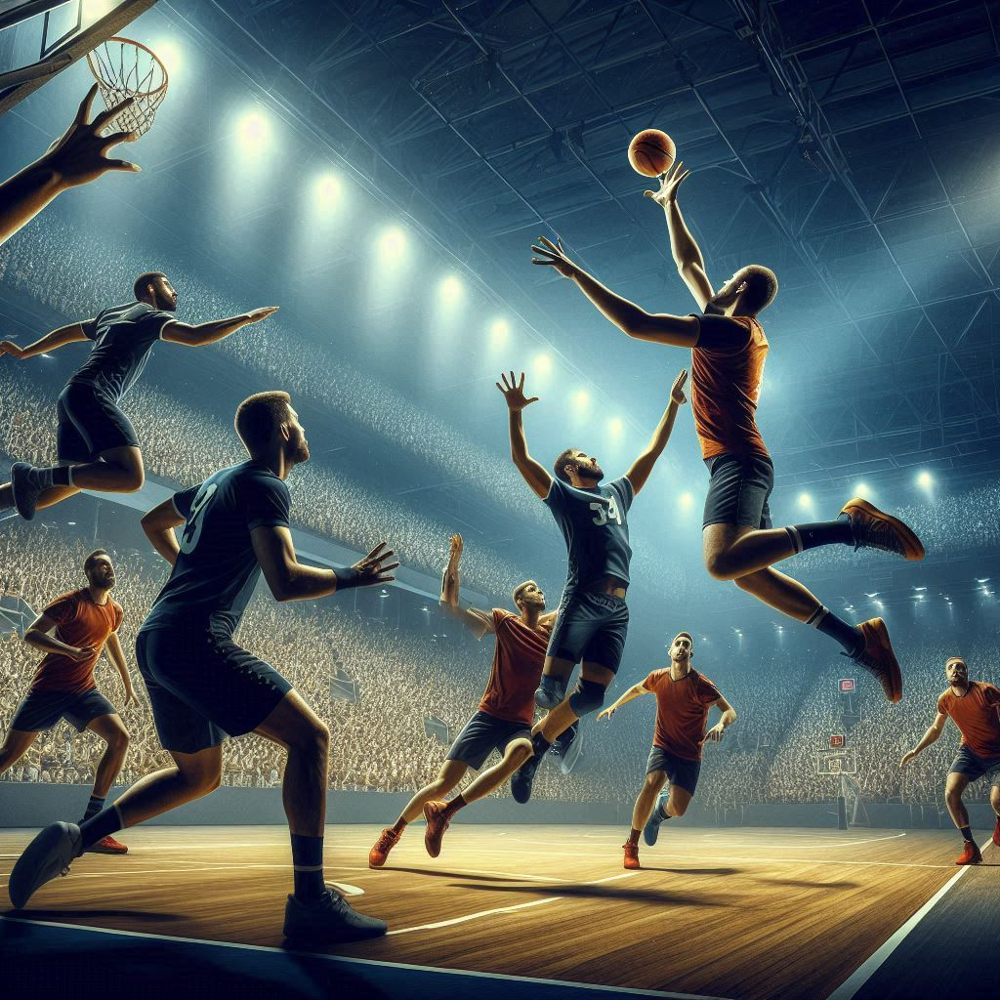

História do Basquete

A origem do basquete remonta a dezembro de 1891, quando James Naismith, um professor
canadense de educação física, foi desafiado a criar um jogo que pudesse ser jogado
em ambientes fechados durante o inverno rigoroso de Massachusetts. Naismith trabalhava
na YMCA International Training School em Springfield, Massachusetts, onde seus alunos
estavam entediados e inquietos por não poderem praticar atividades ao ar livre. Ele
foi incumbido pelo diretor do colégio, Dr. Luther Gulick, de desenvolver uma nova
atividade física para manter os alunos ativos e envolvidos.Para criar o novo jogo,
Naismith se baseou em sua experiência com esportes ao ar livre e na necessidade de um
jogo que não exigisse muita força física, mas que promovesse trabalho em equipe e
habilidade. Ele estabeleceu algumas diretrizes básicas: o jogo deveria ser jogado em
um ginásio, usaria uma bola que poderia ser facilmente manuseada, e o contato físico
deveria ser minimizado para evitar lesões.
Naismith pegou uma bola de futebol e dois cestos de pêssegos, que foram pregados nas
extremidades opostas do ginásio, a uma altura de aproximadamente 3 metros. O objetivo
do jogo era simples: arremessar a bola dentro dos cestos. Cada vez que uma equipe
marcava um ponto, o jogo era pausado para que a bola fosse retirada manualmente do
cesto, o que posteriormente foi facilitado com a remoção do fundo dos cestos,
permitindo que a bola passasse livremente. O primeiro jogo de basquete foi jogado
em 21 de dezembro de 1891. Naismith dividiu sua classe de 18 alunos em duas equipes
de nove jogadores cada. O jogo era rudimentar, e a pontuação final foi de 1 a 0, com
apenas um ponto sendo marcado por uma cesta. Apesar da simplicidade, o jogo foi um
sucesso imediato, sendo bem recebido pelos alunos pela sua dinâmica e pelo desafio que
apresentava. A popularidade do basquete cresceu rapidamente. A YMCA desempenhou um
papel crucial na disseminação do novo esporte, pois suas instalações estavam presentes
em várias cidades dos Estados Unidos e no exterior. Os estudantes que aprenderam o jogo
nas YMCA’s começaram a levá-lo para suas comunidades, escolas e outras organizações.
O crescimento do basquete levou à formalização de suas regras e ao desenvolvimento
de competições organizadas. Em 1893, o primeiro jogo feminino de basquete foi realizado
no Smith College em Northampton, Massachusetts, sob a supervisão de Senda Berenson, que
adaptou as regras de Naismith para mulheres. Em 1898, a primeira liga profissional de
basquete, a National Basketball League (NBL), foi formada, embora tenha durado apenas
seis anos.
Quadra de Basquete
- A quadra de basquete deve medir 24x14 m, que em termos mais técnicos significa 24 metros de comprimento por 14 metros de largura.
- As linhas de lance livre são traçadas paralelamente a com as linhas da quadra de basquete. Sua borda mais distante está exatamente a 5,80 m da borda interna da linha de base e tem 3,60 m de comprimento..
- A quadra tem dois lados proporcionalmente iguais em comprimento e largura.
- A área da cesta de 3 pontos consiste em um semi-círculo de 6,75 metros de raio..
- A altura de uma cesta da NBA é de 3,05m do chão.
Bola de Basquete
- Tamanho da circunferência: 74,9 centímetros.
- Peso: de 623 gramas.
Jogadores de Basquete
- A quantidades de jogadores pode variar de acordo para a competição, mas o padrão está em torno de 10 à 12 jogadores no elenco, sendo 5 deles titulares.
- Dentre os jogadores, há: 1 armador principal, 1 Ala armador, 1 Ala, 1 Ala-pivô e 1 Pivô.
Partida de Basquete
- Uma partida é definida por quatro quartos de 10 minutos, totalizando 40 minutios totais de bola em jogo.
- Cada time tem direito a no máximo 24 segundos de posse de bola.
- um time deve avançar a bola além da linha central em no máximo 10 segundos de posse da bola. Se não o fizer, ela será do time adversário.
- Um jogador deve avançar a bola em até 5 segundos. Após uma falta ou lateral a bola deve ser colocada em jogo em até cinco segundos.
- Lances como enterradas valem 2 pontos, Arremesso dentro da área de 3 pontos valem essa quantidade de pontos. Faltas dão direito a dois arremessos de um ponto por acerto cada.
Curiosidades do Basquete
- O nome vem do inglês basketball, que significa literalmente "bola no cesto".
- O basquete foi criado no ano de 1891 nos EUA. Quem inventou foi James Naismith.
- a maior pontuação em um jogo da NBA é de Wilt Chamberlain, que marcou 100 pontos pelo Philadelphia Warriors (nome anterior do Golden State Warriors) em 1962 contra o New York Knicks.
- Um dos maiores símbolos do basquete era ligeiramente diferente quando foi criado. As bolas eram originalmente marrons no início do esporte, mas a cor era considerada difícil de enxergar pelos atletas e torcedores que assistiam aos jogos.
- O recorde de público em uma partida de basquete aconteceu em 2010, durante a 59ª edição do NBA All-Star Game com um publico de 108 mil pessoas.
- Simone, antes de se tornar cantora e emplacar o hit “Então é Natal”, jogou basquete e fez parte da Seleção Brasileira Feminina.